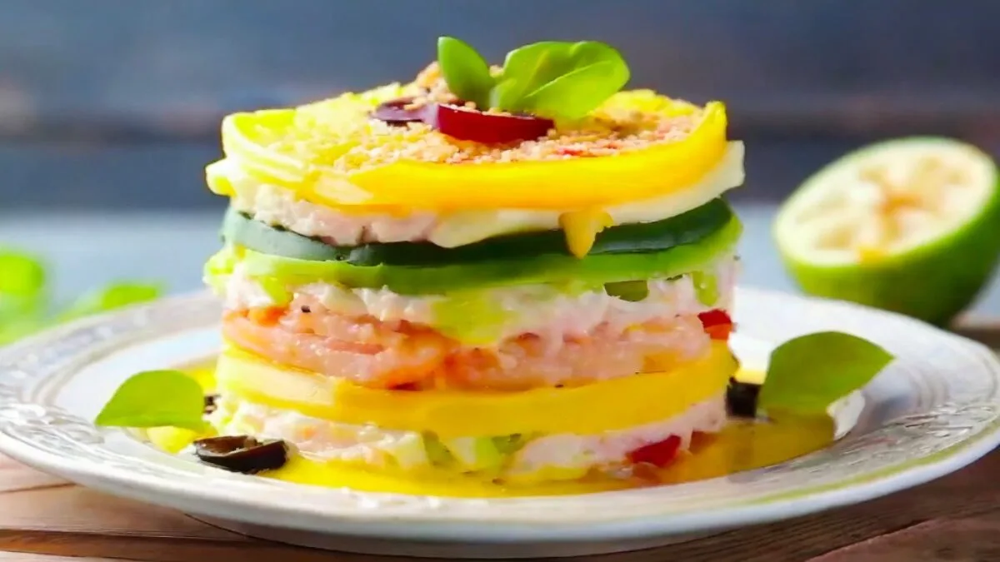
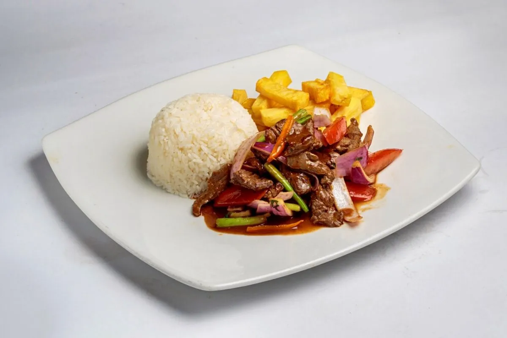
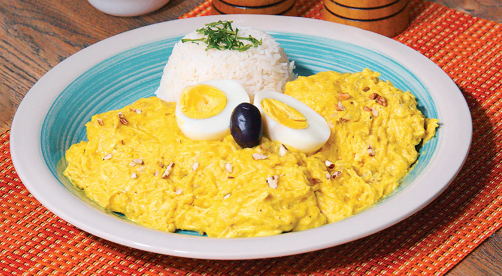
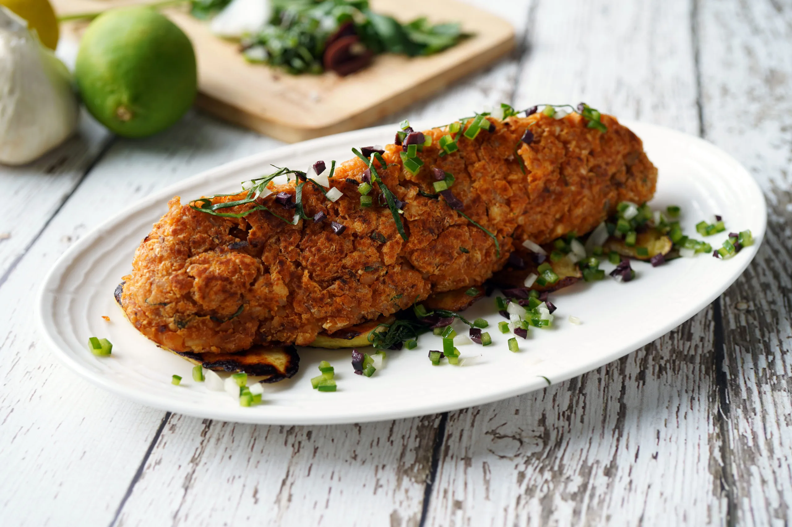
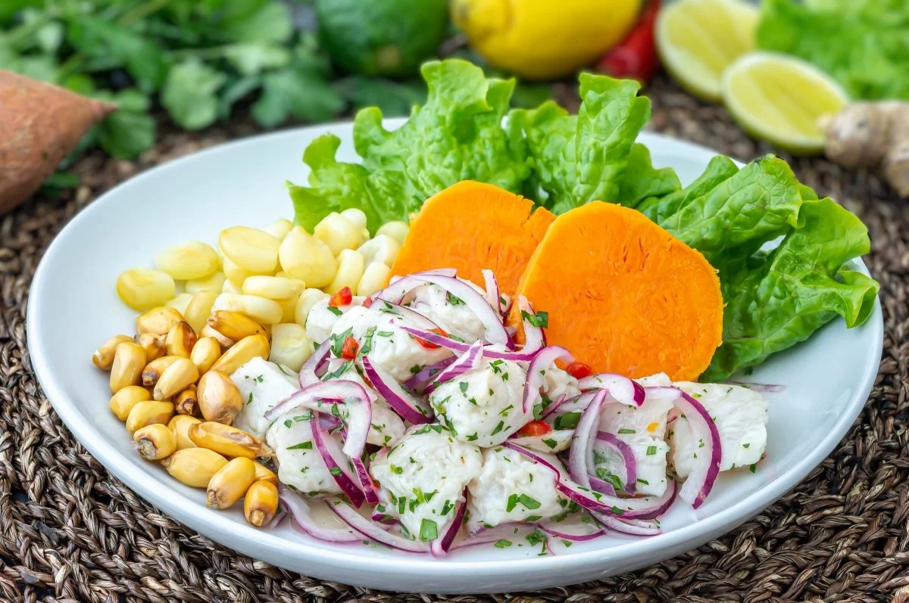
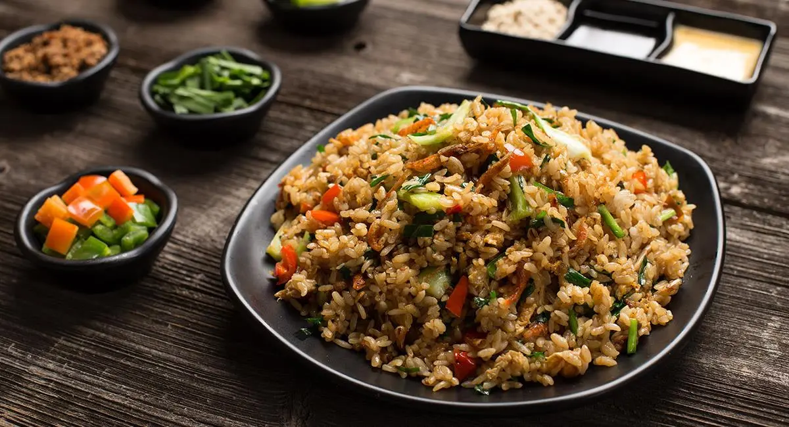
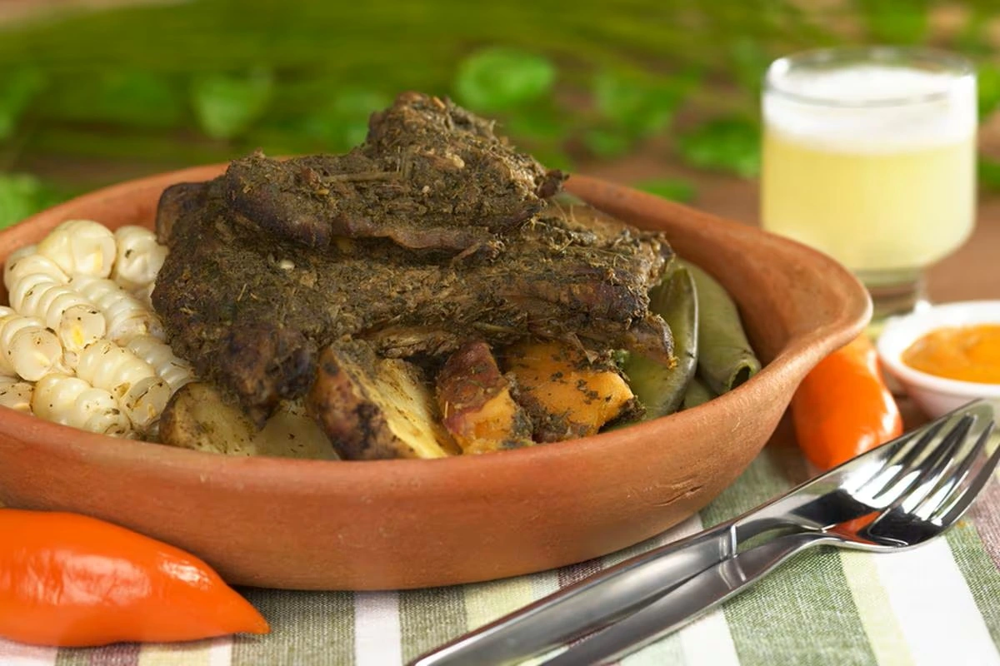
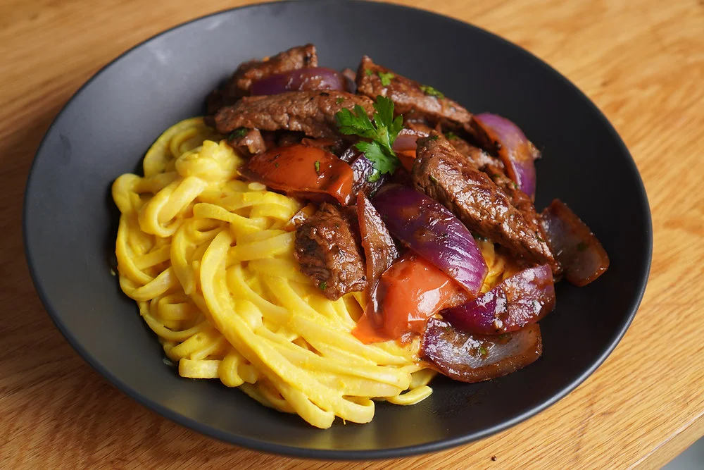
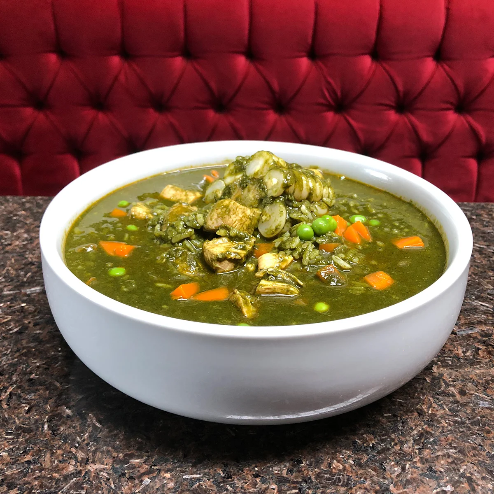

Sabores del Perú - Menu
Our Featured Dishes

Causa Limeña
Layered mashed potatoes with lime, filled with chicken or tuna, and topped with avocado.
$12.00

Lomo Saltado
A stir-fry of beef, onions, tomatoes served with fries and rice.
$18.00

Ají de Gallina
Shredded chicken in a spicy, creamy sauce served with potatoes.
$14.00

Tacu Tacu
Fried rice and beans with a choice of meat or seafood.
$16.00

Ceviche
Freshly marinated seafood with a tangy citrus flavor.
$15.00

Pollo a la Brasa
Peruvian-style rotisserie chicken, served with fries and salad.
$13.00

Pachamanca
Traditional Peruvian dish made with marinated meats, potatoes, and spices.
$20.00

Tallarines a la Huancaina
Pasta with a creamy Huancaina sauce made from cheese and aji peppers.
$14.00

Aguadito
A hearty Peruvian chicken soup with cilantro and vegetables.
$11.00